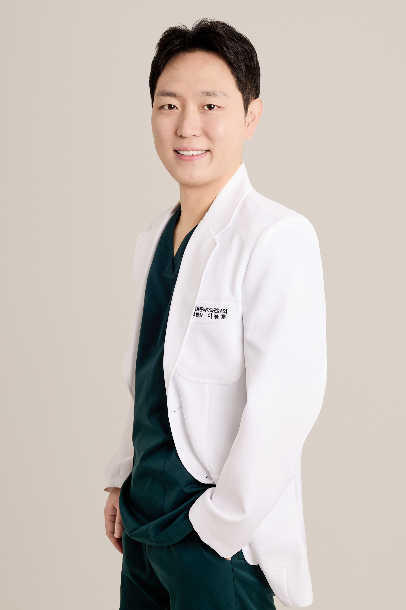

GrooCare
[개발 중 / 운영 중]병원 환자관리 프로그램. 환자 예약과 치료 스케줄을 관리하고, 마이아파와 연계해 환자의 통증 변화를 확인할 수 있습니다.
역할: 기획 · 임상 설계 · 개발

마취통증의학과 전문의
리드엠마취통증의학과의원 대표원장 · 빈즈바이오랩 대표
의료 현장의 경험을,
더 나은 헬스케어로.
마취통증의학과 전문의로서 통증·재활 진료 현장에서 쌓은 경험을 바탕으로, 임상 데이터 연구와 헬스케어 서비스 개발을 진행하고 있습니다.
병원 환자관리 프로그램. 환자 예약과 치료 스케줄을 관리하고, 마이아파와 연계해 환자의 통증 변화를 확인할 수 있습니다.
역할: 기획 · 임상 설계 · 개발
환자를 위한 통증 관리 앱. 통증을 기록하고 병원과 공유해, 진료 시 환자와 의료진이 함께 통증 경과를 확인하도록 돕습니다.
역할: 기획 · 임상 설계 · 개발
AI를 활용한 학생용 오답노트 앱. 틀린 문제를 정리하고 복습할 수 있도록 돕습니다.
역할: 기획 · 개발